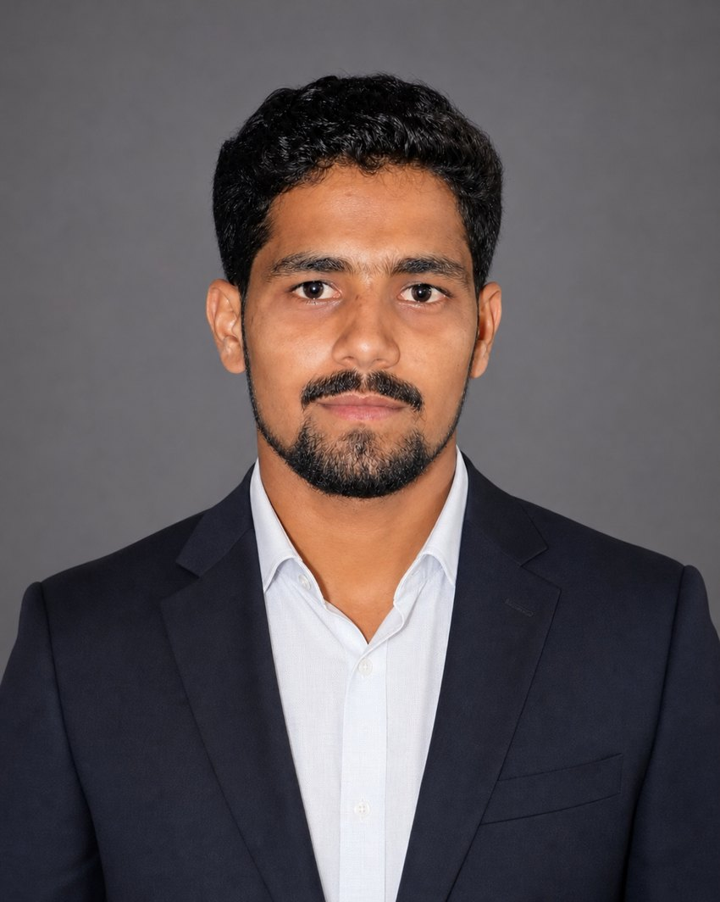

Researcher · Advanced additive manufacturing & soft robotics
Dr. Saiyadali H. Ladakhan
Postdoctoral Researcher · Istituto Italiano di Tecnologia, Genoa
I work at the intersection of additive manufacturing, smart materials and soft robotics. My research explores how material selection, manufacturing processes and structural design can be brought together to create reliable, functional and adaptive engineering systems.
My background spans 4D-printed shape-memory actuators, multi-material structures, mechanical characterization and the design of compliant robotic components.

Research
My research combines manufacturing science and mechanical design with the development of smart and compliant structures. During my PhD at IIT Dharwad, I worked on an integrated 4D-printing approach for shape-memory-alloy and polymer-based structures. My postdoctoral work at IIT Genoa extends this foundation to additively manufactured soft structures, their mechanical response and reliable design.
3D / 4D printing
Multi-material manufacturing, printing strategies, Design for Additive Manufacturing and process development.
Smart materials & actuation
Shape-memory alloys and polymers, programmable structures and functional actuation.
Soft robotics & lattices
Compliant architectures, soft robotic links, continuum structures and lattice-based designs.
Mechanics & validation
Mechanical characterization, material interfaces, numerical modelling and process–structure–property relationships.
Current research: Manufacturing-informed design and experimental characterization of additively manufactured soft robotic structures.
Long-term direction: Reliable multifunctional structures integrating material design, manufacturing, sensing and actuation.
Long-term direction: Reliable multifunctional structures integrating material design, manufacturing, sensing and actuation.
Publications
Journal articles, conference proceedings and a book chapter. The list follows the categories in my November 2026 CV. For current citation information, see Google Scholar.
Peer-reviewed journal articles
4D printing of polylactic acid (PLA)/PLA-thermoplastic polyurethane (TPU)-based metastructure: examining the mechanical, thermal, and shape memory properties
Paper / DOI ↗A study of the functional capabilities of shape memory alloy-based 4D printed analogous bending actuators
Paper / DOI ↗Investigation of Mechanical Behavior of Nano-alumina-Reinforced Polylactic Acid Composite Through Micro-mechanism Approach
Paper / DOI ↗An experimental investigation on performance of NiTi-based shape memory alloy 4D printed actuators for bending application
Paper / DOI ↗Conference proceedings
Design and fabrication of shape memory alloy-based 4D-printed actuator for FWMAV: A performance study
Paper / DOI ↗Book chapter
Monolithic strategies for soft robotics via light-induced 3D printing: towards fully integrated systems
Chapter / DOI ↗Additional manuscripts are under review or in preparation. Details will be added after public release.
Teaching & mentoring
As a teaching assistant at IIT Dharwad (2020–2024), I supported undergraduate and postgraduate laboratory teaching, with an emphasis on hands-on engineering, fabrication, measurement and mechanical testing.
Laboratory teaching
- Manufacturing and Metrology Laboratory (B.Tech.)
- Manufacturing Processes I & II Laboratory (B.Tech.)
- Hands-on Engineering Laboratory (B.Tech.)
- Programming and Modelling Laboratory (M.Tech.)
- 3D Printing of Composite Materials (M.Tech.)
- Mechanical Characterisation Laboratory (M.Tech.)
Student mentoring
Mentored undergraduate project teams and summer research interns on SMA–polymer interfaces, 4D-printed actuation for a flapping-wing micro air vehicle, and engineering design projects. Two projects contributed to peer-reviewed outputs.
Teaching interests
Additive Manufacturing, Design for Additive Manufacturing, Manufacturing Processes, Smart Materials, Engineering Metrology, Mechanical Characterization and introductory Soft Robotics.
Recognition & service
2024
Granted Indian patent · No. 531392
An assembly for creating programmable shape-memory alloys for 4D printing (with Somashekara M. A. and Rakshith B. S.).
Technology translation
DST TETRA-supported 4D-printing technology development
Contributed to the continuation of the PhD 4D-printing technology under a project led by Dr. Somashekara M. A. (project support: INR 30 lakh (31827 USD)).
2023
Best Oral Presentation · ShOdhaYAntrikI
Recognition for work on shape-memory-polymer-based metastructures at IIT Dharwad.
2022 & 2024
IInvenTiv research showcases
The 4D-printing system and subsequent semi-automatic prototype were featured at national research and innovation events.
Academic service
Peer review
Reviewer activities for journals and conferences including Progress in Additive Manufacturing, Smart Materials and Structures, International Journal of Extreme Manufacturing, IEEE RoboSoft and ASME.
Background
Feb 2025 – present
Postdoctoral Researcher · Istituto Italiano di Tecnologia, Genoa, Italy
Soft BioRobotic Perception; additive manufacturing and mechanical design of soft structures.
Aug 2024 – Jan 2025
Junior Research Fellow · IIT Dharwad, India
Additive Manufacturing and 4D Printing Laboratory.
2020 – 2024
Ph.D. · IIT Dharwad, India
Mechanical, Materials and Aerospace Engineering. Thesis: Design and Development of 4D Printing Technique with Multi-Material and Multi-Functionality.
2017 – 2019
M.Tech. · R. V. College of Engineering, Bengaluru, India
Tool Engineering.
2013 – 2017
B.E. · KLS Vishwanathrao Deshpande Rural Institute of Technology, haliyal, India
Mechanical Engineering.
Contact
I welcome conversations about additive manufacturing, smart structures, soft robotics and academic collaboration.
Email: saiyadali.ladakhan@iit.it
Institution: Istituto Italiano di Tecnologia, Genoa ↗